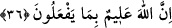

görmektedir. Oysa her şeye kadir olanla çok âciz olan arasında asla eşitlik yoktur.
Acziyet ve kudretin her ikisi birbirinin zıddıdır
Akıl sana onların bir olduğunu söylerse yalandır
Acziyet mahluka aittir ki postu yırtar, ölür
Kudrette kemal üzere kadir olan Hz. Hak’dır
36. Onların çoğu zandan başka bir şeye uymuyorlar. Zan ise gerçekten hiçbir şey
kazandırmaz. Doğrusu Allah onların yapmakta olduklarını bilir.
“Onların çoğu” putların tanrıları oldukları şeklindeki inançlarında, araştırmaksızın
“zandan başka bir şeye uymuyorlar.” Bu konuda sırf kendi atalarını taklid ediyorlar.
“Onların çoğu” ifadesinde, bazı müşriklerin ilme tâbi olup tevhidin hak, putperestliğin
ise bâtıl olduğu konusuna vâkıf olduklarını, fakat bunu inatları yüzünden kabul
etmedikleri ihsâs edilmektedir. “Zan ise gerçekten hiçbir şey” hiçbir fayda
“kazandırmaz.” yâni zan ve tahmin insana hak ve yakin getirmeye kadir olamaz. Bu
ifâdenin “Zan gerçek yerine geçmez.” anlamına gelmesi de muhtemeldir.
Bazıları der ki: Putların şefaatçi oldukları zannı, müşriklerden azâbı kaldırmaz.
Onların putların şefaatçi olacaklarına dair sözleri tamamen geçersiz, fasid bir hayâle
dayanan kuru bir zandır.
“Doğrusu Allah onların yapmakta olduklarını bilir.” Bu ifade delilden yüz çevirip
zanna uydukları için müşrikler için bir tehdittir. Âyette dinin aslını ilgilendiren
konularda taklid ile yetinmenin câiz olmadığına ve bilginin gerekli olduğuna da delâlet
vardır.
Mesnevî’de şöyle denilir:
Vehim yanlışlara düşer, yanılır;
Halbuki akıl ancak doğruya yönelir, doğruyu bulur.
Kötü kişi; çapası olmayan gemi gibidir,
Ne demir atmış, ne bir yere bağlıdır, fırtınadan kurtulamaz.
Akıllıya emniyet ve huzur veren akıl çapasıdır
Sen de akıllı kişilerden bir çapa iste.
Önceki âyetin “O halde neyiniz var, nasıl hükmediyorsunuz?” cümlesi, müşriklerin
kâmil akıldan mahrum olduklarını göstermektedir. Çünkü kâmil bir akla sahip olan kişi,
bâtıla ve cehâlete değil, gerçeğe ve bilgiye tâbi olur. Atalarının müşriklik sıfatını